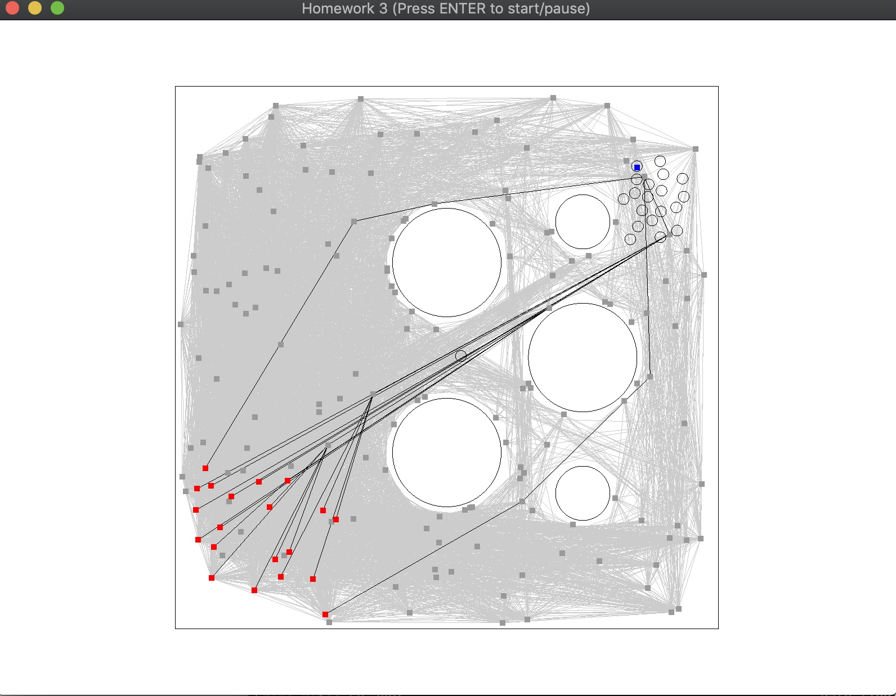

This homework contains 2 scenarios. The first task is to generate
path for agents and the agent group will reach the destination as boids
and using TTC to avoid collision.
I also added some collision detection features to make the planning better.
The second task is to change the destination dynamically,
which requires to replan paths for agents.
Agents also move as boids.
The group interaction is built on top of Boids and TTC.
TTC is used to check the distance between one agent and another, or
between one agent and obstacles.
The global navigation is based on PRM/A* and RRT/Optimal RRT.
My video contains 9 scenes. Details can be found in the feature section.
Basic planning tasks for agents to move to the target.
The group interaction is implemented with Boids and TTC.
The path planning is based on PRM and A*.
200 points are sampled to construct the graph.
When agents are moving towards the target, a small gap
lies between agents, which is produced by the separation force.
Group movement is also affected by the alignment and cohesion,
which makes agents move like a group instead of individual objects.
This feature is more clear in the second scene.
This scene shows to update the target dynamically and
replan agents next move in real time.
When the agents are moving in an empty area, the flocking
behavior is clear.
But then they are approaching an obstacle, because of the
saparation force from the obstacle, some agents may leave
the group but most of agents still move like a group.
The third scene is used to record PRM/A* performance.
Since I am using the same starting points, destination,
and sample points as the first scene, the shortest path
in this scene is also the same as the first task.
The A* requires to query about 30 vertices and less than
4000 edges to obtain the path.
The forth scene is running with PRM/Dijkstra.
It is running based on the completely same environment
as the third task.
The algorithm requires to query about 165 vertices and
about 12000 edges to obtain the path.
Paths in this task are produced by RRT.
To be clearly display the RRT path, I only demonstrated
the path queried by the last agent from the group.
Compared with the paths obtained by the PRM, paths here
are always curve and even contains waves.
And from my perspective, RRT is much easier to implement,
since I just need to focuse on a small area around the
agent to check if the agent can move a few meters
towards the sample points.
I don't need to think about an obstacle that is pretty
far away from the agent.
Besides this, RRT doesn't required the global sample
points map, so it can run only with information
near the agent and this could be more common in real life.
The sixth scene is about RRT*.
Obviously, results obtained by RRT* are smoother
than results from RRT.
Compared with RRT, RRT* contains additional process
to re-select a parent for the new point that will be
added to the set in order to minimize the cost
from the starting point to the new point.
The re-selections happens in a small area around the new point.
After having re-selected the parent, RRT* will rewire
the other points inside this small area to minimize
their cost as well.
This scene demonstrates a single object running with RRT.
It is just used to show the path more clear.
It is another object running with RRT*.
Notice that the branch in this scene is much more clear
than the previous one.
I think it's because the lines rewiring points is several
times the stride.
Frankly, the path in this scene does not contain may curves
like the previous one.
Another thing is that all of cases demonstrated till now
are running with smoothing.
In this case, you can see that the agent is not running
along the path.
Instead, it selected another path that is pretty close to
the obstacle.
It performs this since that point is the farthest it can
reach without crashing into any obstacle.
The last scene is rnning without smoothing.
Compared with the previous one, you can discover that the
agent is running almost along path.
Sometimes it may leave the path.
That is because when the agent performs a different action,
it still has a velocity .
That velocity makes the agent to perform as before
for a small period of time unitl the steer force can
pull the agent back to the right track.
Additional features implemented:
(10)Implememnt and compare two different global navigation techniques.
(5) Allow the user to dynamic choose anget starts and goals at run time.
(5) Implement A* for graph search, much document performance improvement.
(5) Implement path smoothing.
(10) Implement an RRT. Briefly compare the RRT to the PRM method in terms of
generated path, and ease of coding.
(15) Implement the Optimal RRT algorithm (RRT*).
Failure case

I only took a screenshot from one test on my program.
The agent in the center of the image just got stuck there.
It was shaking at that position but couldn't move to the target.
I think that may be caused by the force from the objects around.
Probably the forces are balanced here so it cannot move anymore.
Sometimes similar cases occur in my test but the object just
moves slowly and will reach the destination at the end. This
process always consumes more time and the object will leave
the group.
Required libraries
OpenGL
glad
GLFW
SDL2
glm (included in the code repo)
stb_image (included in the code repo)
How to run it
Clone the code repo to the local machine.
Run "make" to build the project.
Run "./hw3" to start the simulation.
References
Boid example from Processing website
TTC example from Prof. Guy
Difficult parts
It's so hard to tune Boid model since there are many forces
involved. I think params used in my code are almost there
but still not the perfect.
Sometimes it produces weird results.
I tried to implement the RVO/ORCA but failed. It's interesting.
I will keep working on this.